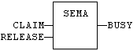
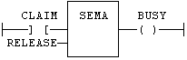

Function Block
Semaphore.
|
Name |
Type |
Description |
|
CLAIM |
BOOL |
Takes the semaphore. |
|
RELEASE |
BOOL |
Releases the semaphore. |
|
Name |
Type |
Description |
|
BUSY |
BOOL |
TRUE if semaphore is busy. |
The function block implements the following algorithm:
BUSY := mem;
IF CLAIM THEN
mem := TRUE;
ELSE IF RELEASE THEN
BUSY := FALSE;
mem := FALSE;
END_IF;
In LD language, the input rung is the CLAIM command. The output rung is the BUSY output signal.
MySema is a declared instance of SEMA function block:
MySema (CLAIM, RELEASE);
BUSY := MyBlinker.BUSY;

